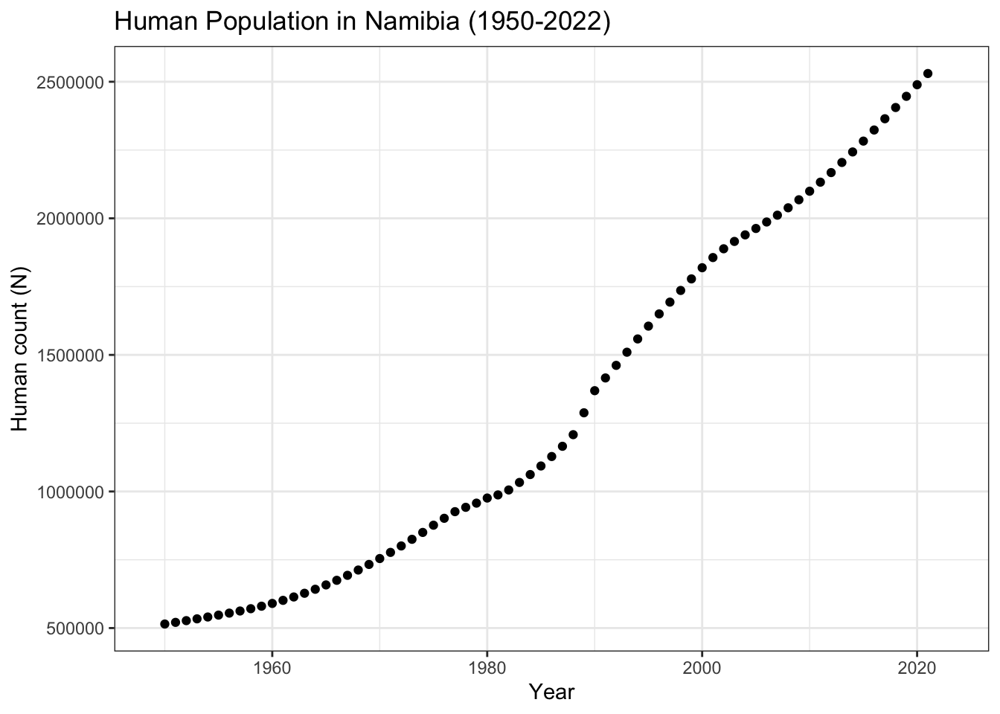
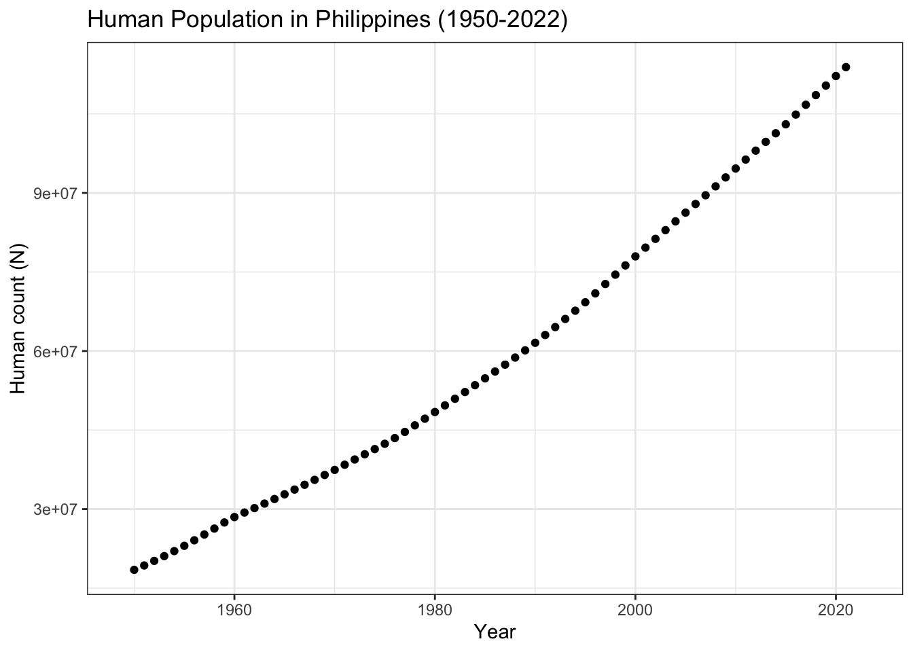
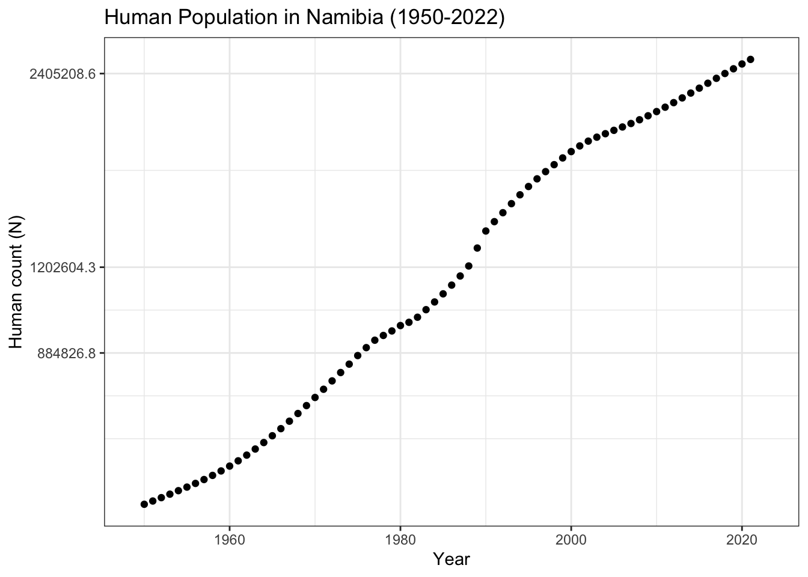
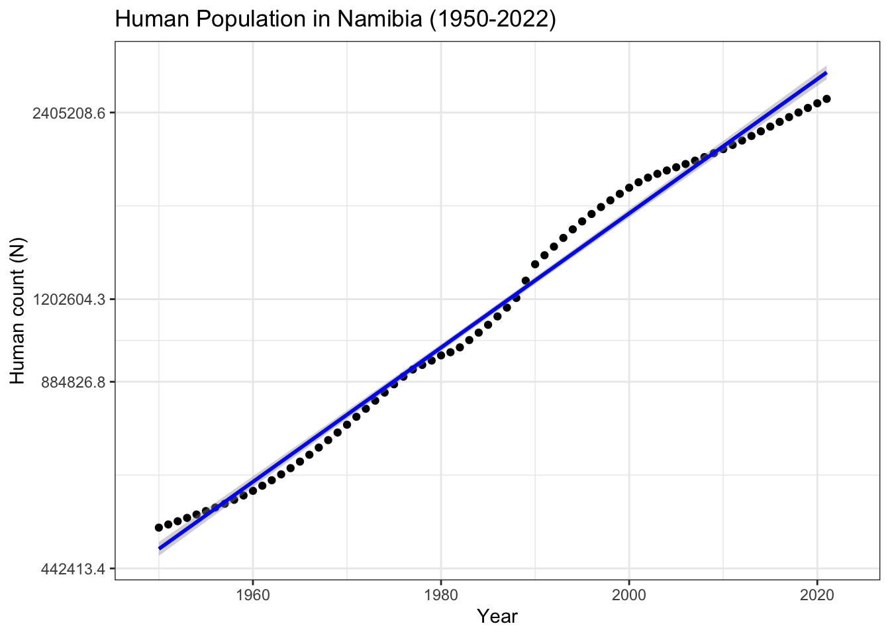
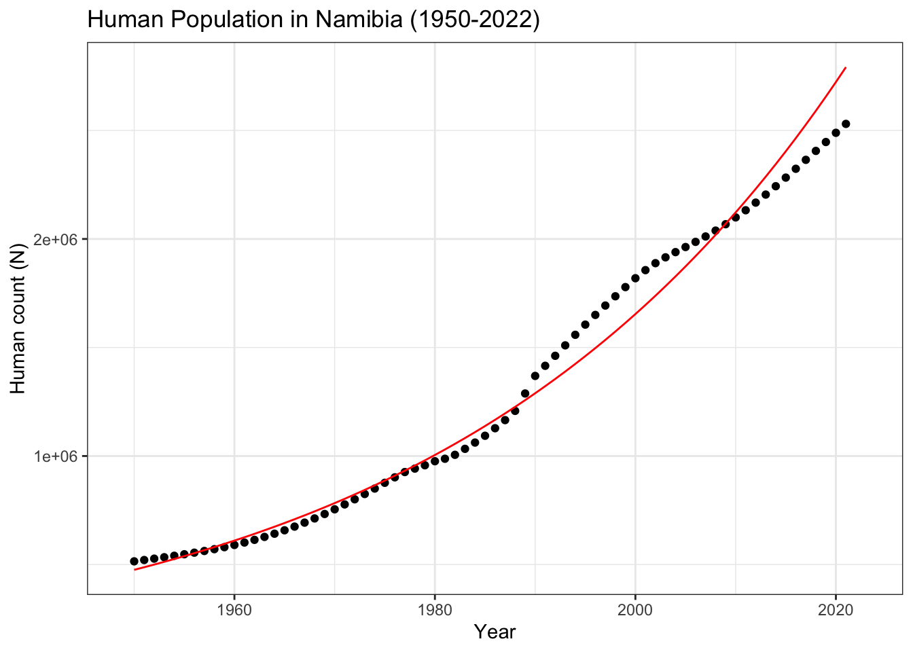

# Exponential growth of Human Population
# Example
# Christopher L Jerde
# Notes:Data from https://ourworldindata.org/population-growth#introduction
########################################Portfolio 2 - Growth Population Data
Growth curver package in R using world data
#Clear the R environment
rm(list = ls())
#Libraries needed
library(janitor) #cleans data and names
Attaching package: 'janitor'The following objects are masked from 'package:stats':
chisq.test, fisher.testlibrary(here) #allows for localized file directoryhere() starts at /Users/oliviasomhegyi/Desktop/Grad School/2nd_Year/Winter_Quarter/ESM_211/esm_211_lablibrary(tidyverse) #makes R work nicely── Attaching core tidyverse packages ──────────────────────── tidyverse 2.0.0 ──
✔ dplyr 1.1.3 ✔ readr 2.1.4
✔ forcats 1.0.0 ✔ stringr 1.5.0
✔ ggplot2 3.4.4 ✔ tibble 3.2.1
✔ lubridate 1.9.2 ✔ tidyr 1.3.0
✔ purrr 1.0.1 ── Conflicts ────────────────────────────────────────── tidyverse_conflicts() ──
✖ dplyr::filter() masks stats::filter()
✖ dplyr::lag() masks stats::lag()
ℹ Use the conflicted package (<http://conflicted.r-lib.org/>) to force all conflicts to become errors#get the data
w_pop_data<-read_csv(here("data","population-and-demography.csv"))Rows: 18288 Columns: 24
── Column specification ────────────────────────────────────────────────────────
Delimiter: ","
chr (1): Country name
dbl (23): Year, Population, Population of children under the age of 1, Popul...
ℹ Use `spec()` to retrieve the full column specification for this data.
ℹ Specify the column types or set `show_col_types = FALSE` to quiet this message.w_pop_data_philippines<- w_pop_data |> clean_names() |>
filter(country_name=="Philippines") |> # filter for Phillipines
select(year, population) |> drop_na()
#clean the data for only the global human population
w_pop_data<- w_pop_data |> clean_names() |>
filter(country_name=="Namibia") |> # filter for Namibia
select(year, population) |> drop_na()Always plot your data
#On the observed scale - Namibia
human_ts<-ggplot(w_pop_data, aes(x=year, y=population))+
geom_point()+
xlab("Year")+
ylab("Human count (N)")+
xlim(1949, 2023)+
ggtitle("Human Population in Namibia (1950-2022)")+
theme_bw()
human_ts
Increasing - largely linear, with a few aspects that are exponential
#On the observed scale - Philippines
human_ts_philippines<-ggplot(w_pop_data_philippines, aes(x=year, y=population))+
geom_point()+
xlab("Year")+
ylab("Human count (N)")+
xlim(1949, 2023)+
ggtitle("Human Population in Philippines (1950-2022)")+
theme_bw()
human_ts_philippines
The Philippines have logistic growth
#on the transformed log scale - Namibia
human_ts_log<-ggplot(w_pop_data, aes(x=year, y=population))+
geom_point()+
xlab("Year")+
ylab("Human count (N)")+
scale_y_continuous(trans="log")+ # log scale for linear transformation
xlim(1949, 2023)+
ggtitle("Human Population in Namibia (1950-2022)")+
theme_bw()
human_ts_log
Increasing - largely linear, the slope decreases at the end of the time series indicating a drop off/slowing of population growth
use lm() to find estimates
human.lm_fit<- lm(log(population)~year,data=w_pop_data)
summary(human.lm_fit) #p-value < 2.2e-16; adjusted R-squared: 0.9889; results indicate model is a good fit.
Call:
lm(formula = log(population) ~ year, data = w_pop_data)
Residuals:
Min 1Q Median 3Q Max
-0.09836 -0.04272 -0.01722 0.04819 0.09824
Coefficients:
Estimate Std. Error t value Pr(>|t|)
(Intercept) -3.553e+01 6.223e-01 -57.10 <2e-16 ***
year 2.493e-02 3.134e-04 79.53 <2e-16 ***
---
Signif. codes: 0 '***' 0.001 '**' 0.01 '*' 0.05 '.' 0.1 ' ' 1
Residual standard error: 0.05527 on 70 degrees of freedom
Multiple R-squared: 0.9891, Adjusted R-squared: 0.9889
F-statistic: 6326 on 1 and 70 DF, p-value: < 2.2e-16NO<-exp(human.lm_fit$coefficients[1]) # calculate Nknot parameter (3.7e-16)
r<-human.lm_fit$coefficients[2] # calculate the growth rate coefficient (0.0249)Plot the data and the model
# On the transformed scale - Namibia
human_ts_model_trans<-ggplot(w_pop_data, aes(x=year, y=population))+
geom_point()+
xlab("Year")+
ylab("Human count (N)")+
scale_y_continuous(trans="log")+
geom_smooth(method="lm",color="blue")+
xlim(1949, 2023)+
ggtitle("Human Population in Namibia (1950-2022)")+
theme_bw()
human_ts_model_trans`geom_smooth()` using formula = 'y ~ x'
Pretty good model fit, but the data is not quite linear. The model over estimate and under estimate often, but provides a general idea of the data trend even if it is not the best fit.
# On the observed scale
# Predicted population values from the model
predicted_df <- data.frame(pop_pred = predict(human.lm_fit, w_pop_data), year=w_pop_data$year)
predicted_df<- predicted_df |> mutate(N_est=exp(pop_pred)) #transformed back to observed population estimates
# Namibia
human_ts_model<-ggplot(w_pop_data, aes(x=year, y=population))+
geom_point(color="black")+
geom_line(color='red',data = predicted_df, aes(x=year, y=N_est))+
xlab("Year")+
ylab("Human count (N)")+
xlim(1949, 2023)+
ggtitle("Human Population in Namibia (1950-2022)")+
theme_bw()
human_ts_model
Good model fit until about year 1988, then the data deviates a bit from the model fit. Recent years (~2008-2022) aren’t well fit for this model, but the first several years are very well fit.